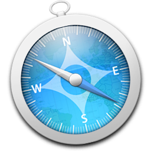

Home : Android Phonegap Examples
These are examples that work for phonegap under the iOS platform.
Compass Mashup
The compass is a sensor that detects the direction or heading that the device is pointed. It measures the heading in degrees from 0 to 359.99. This example shows the accelerometer and uses geolocation.
- Android
- iPhone
 Geo location with Twitter Mashup
Geo location with Twitter Mashup
- Android
- iPhone
Geolocation with Twitter provides a location pin showing where the developers of Twitter are currently tweeting.
Geo location
- Android
- iPhone
Geolocation provides location information for the device, such as latitude and longitude. Common sources of location information include Global Positioning System (GPS) and location inferred from network signals such as IP address, RFID, WiFi and Bluetooth MAC addresses, and GSM/CDMA cell IDs. No guarantee is given that the API returns the device's actual location.
Network Connection
Connection is a fast way to determine the device's network connection state, and type of connection.
- Android
Camera Example
The camera object provides access to the device's default camera application.
- Android
Contacts
- Android
The Contacts object provides access to the device contacts database.